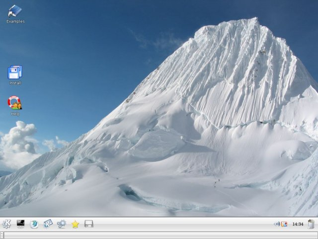
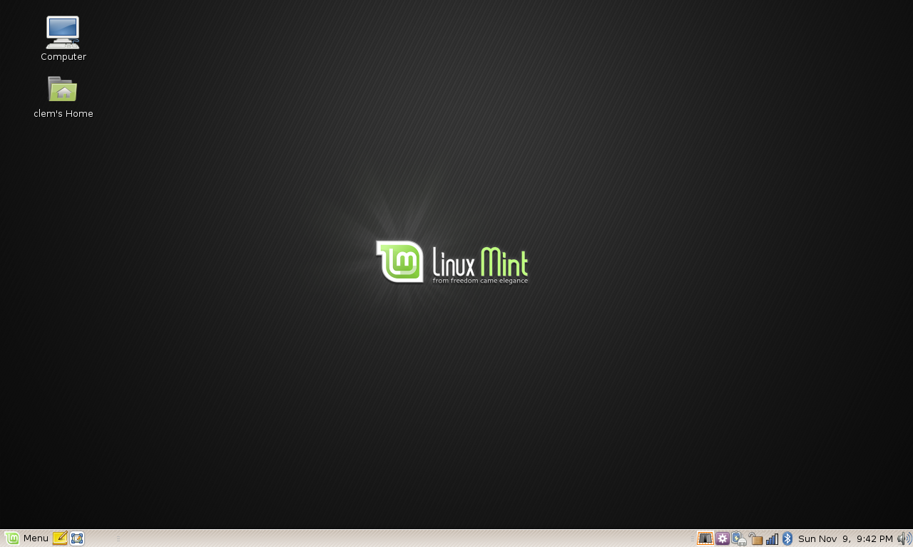
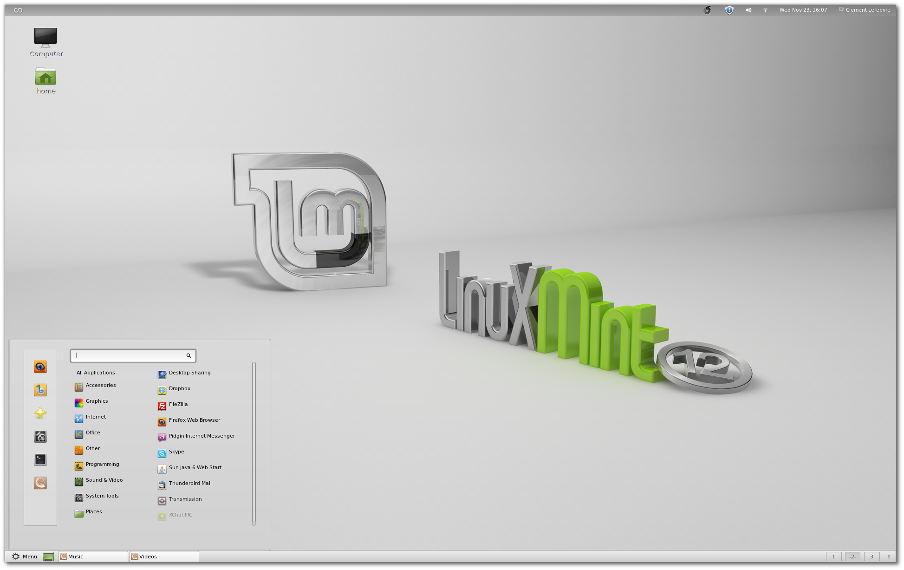
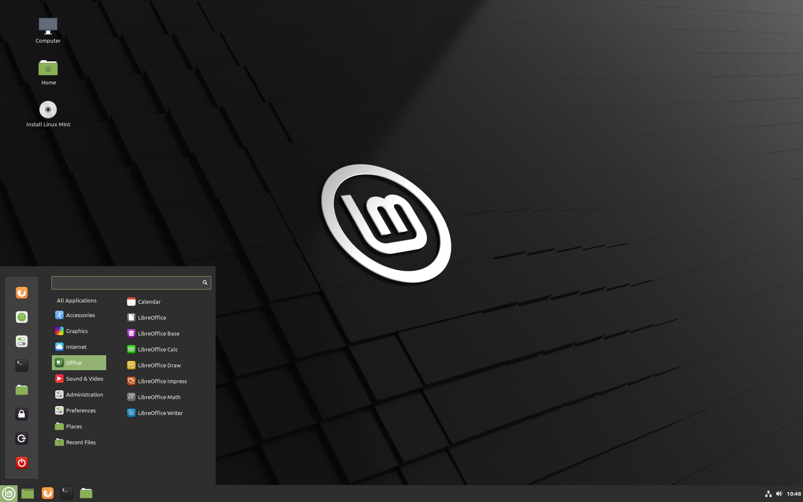

Linux Mint is one of the most popular desktop Linux distributions and used by millions of people.
It is one of the best alternatives to Microsoft Windows and Apple MacOS.
Purpose
The purpose of Linux Mint is to produce a modern, elegant and comfortable operating system which is both powerful and easy to use.
Some of the reasons for the success of Linux Mint are:
- It works out of the box, with full multimedia support and is extremely easy to use.
- It's both free of cost and open source.
- It's community-driven. Users are encouraged to send feedback to the project so that their ideas can be used to improve Linux Mint.
- Based on Debian and Ubuntu, it provides about 30,000 packages and one of the best software managers.
- It's safe and reliable. Thanks to a conservative approach to software updates, a unique Update Manager and the robustness of its Linux architecture,
- Linux Mint requires very little maintenance (no regressions, no antivirus, no anti-spyware...etc).
History
In 2021 Linux Mint celebrated its 15th anniversary. Let's take a look back at how it all started and some of the events which have helped shape what it is today.
Articles & reviews
Clement Lefebvre, a French developer now commonly known as "Clem", was writing reviews and tutorials for various Linux sites. To host his own articles he started a website called "Linux Mint".
Early releases
After a time, he began to get a flavour for what the community wanted out of a distribution and started implementing solutions to common problems. In August of 2006, Linux Mint 1.0 “Ada”, based on Kubuntu 6.06 was released.
In November 2006, he switched to a GNOME desktop with Linux Mint 2.0 “Barbara”, based on Ubuntu 6.10.

A new ambition
The project is extremely popular and grows rapidly. A team is formed, forums chat rooms and a website are open.
By the time Linux Mint 3.0 "Cassandra" is released the project has a new logo, its own identity and the ambition to rival Windows and Mac OS.

Development & growth
Linux Mint raises to the top and joins Ubuntu as one of the most popular desktops on the market.

Between Linux Mint 4.0 "Daryna" and Linux Mint 9.0 "Isadora", more and more tools make Linux Mint unique: mintupdate, mintinstall, mintdisk, mintmenu, mintdesktop, mintnanny, mintbackup, mintstick, mintwelcome, mintupload...

A mature desktop
Linux Mint features a desktop experience based on GNOME 2 which has matured for now more than 5 years. It is full-featured, extremely stable and very popular.

A traumatic release
When GNOME 3 replaces GNOME 2 it's a catastrophe for Linux Mint. Many features (the panel, the tray, the menu...etc) are missing and neither the desktop, the theme engine nor the toolkit are stable.
Despite the reimplementation of most of the missing features, the release of Linux Mint 12 "Lisa" based on GNOME 3 is not good enough and is still to this day considered by the team as a regression.

To guarantee its future Linux Mint decides to widen the scope of its development and invests in 2 alternatives to GNOME 3: MATE, a joint project which consists in renaming GNOME 2 and bringing it back, and Cinnamon, a Mint project, which consists in adapting GNOME 3 and turning it into a full-featured desktop.
The modern era
Since 2012 Linux Mint provides incremental improvements to what is a more and more refined desktop experience.
The team has boosted its development by focusing on 3 desktop editions (Cinnamon, MATE and Xfce) and by taking the decisions in 2014 to only use long-term support releases.

The accent is put on quality vs quantity, on doing less to do it better and on pleasing existing users rather than trying to attract new ones.
Following the success of Cinnamon and its compatibility with other distributions, Linux Mint also started to develop cross-distribution and cross-desktop solutions. Nowadays some of the software developed by Linux Mint is enjoyed in many other distributions and bug reports and development are boosted by contributions from people outside of the Linux Mint community.